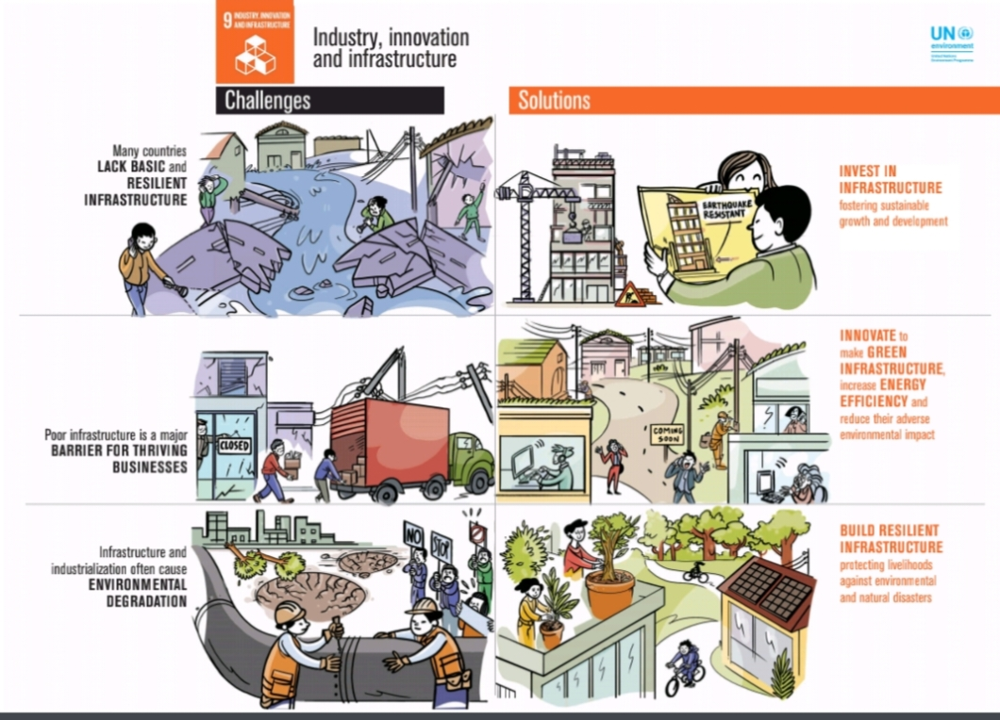

The world moves fast, and infrastructure solutions need to keep up with climate, durability and delivery requirements. From roads to water treatment and from transportation to parking structures,
Inclusive and sustainable industrialization, together with innovation and infrastructure, can unleash dynamic and competitive economic forces that generate employment and income. They play a key role in introducing and promoting new technologies, facilitating international trade and enabling the efficient use of resources.
Global manufacturing growth has been steadily declining, even before the outbreak of the COVID-19 pandemic. The pandemic is hitting manufacturing industries hard and causing disruptions in global value chains and the supply of products.

►PTI launched the innovative program of Pakistan Citizen Portal which will enable citizens to register complaints, check the government ministries performances and participate in governmental affairs.
▸ Naya Pakistan Housing Scheme which will provide better infrastructure
and will provide jobs to millions of people in related construction and services industries
▸ Prime Minister during his official visit to China from 25-28 April, 2019 proposed various areas to include in the Second Belt and Road Forum like labour mobility,
cultural and digital connectivity, and sharing best practices in innovation and knowledge.
Make well planned strategies and policies that are able to run the industrial sector in efficient way.
▸ Provide loans on easy installments with low interest rate to industrialists and increase credit and other financing facilities to fulfill the need of capital for investment.
▸ Improve infrastructure especially establish road networks to link industrial units with
markets.
► Make sure the supply of electricity to industrial sector by increasing the electricity generation through focus on alternative methods to produce electricity.
► Improve law and order situation to increase the foreign investment. Create such environment in a country in which foreign investor feel secure.
▸ Establish new industrial estates to expand the size of industry and provide tax concession to investors in investing in new industrial estates.
► Provide sufficient and cheap raw material to industry to lowering the cost increasing the production of raw material.
1947; Little industry, few services and no manufacture
Industrial growth was 23 percent per annum
► 1958-68: Decade of Development. Construction, electricity/gas, services sector
increased.
► 1977-88: Decade of Economic Growth. Denationalization, Deregulation of interest rates, Liberalization and Reduction in tariff.
► The Pakistan Muslim League (Nawaz) successfully achieved infrastructure development. Projects like China-Pakistan Economic Corridor (CPEC), METRO Bus Project and Orange
line which were initiated through Chinese loans.
► Under CPEC billions of dollars investment projects will be initiated like coal, wind, solar and hydro power projects to serve the energy needs of the country